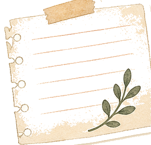
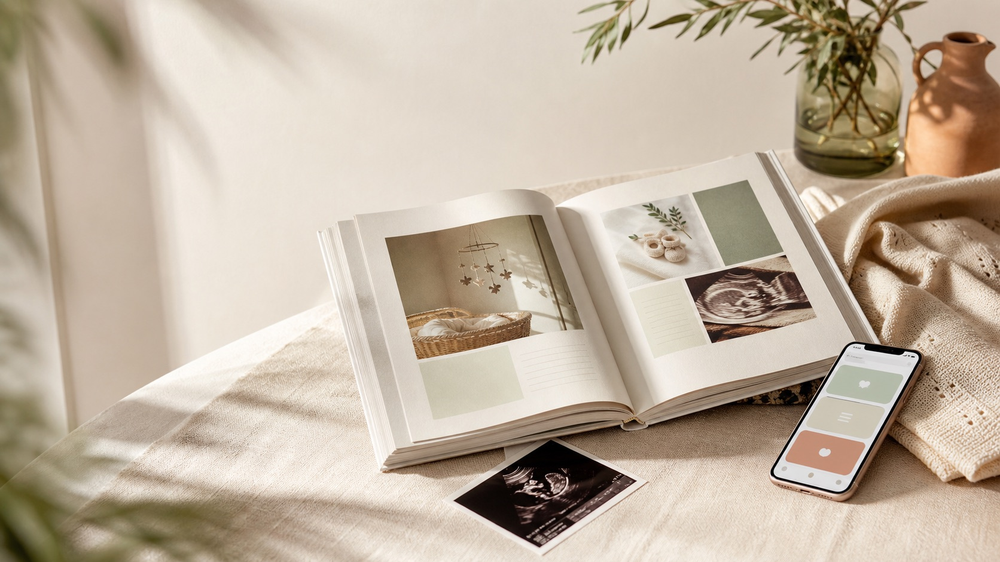
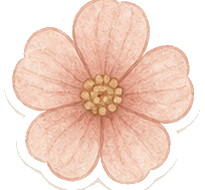
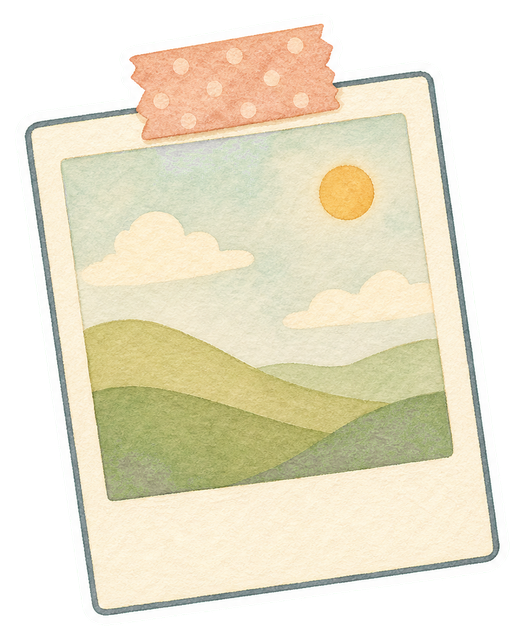
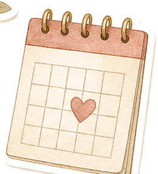
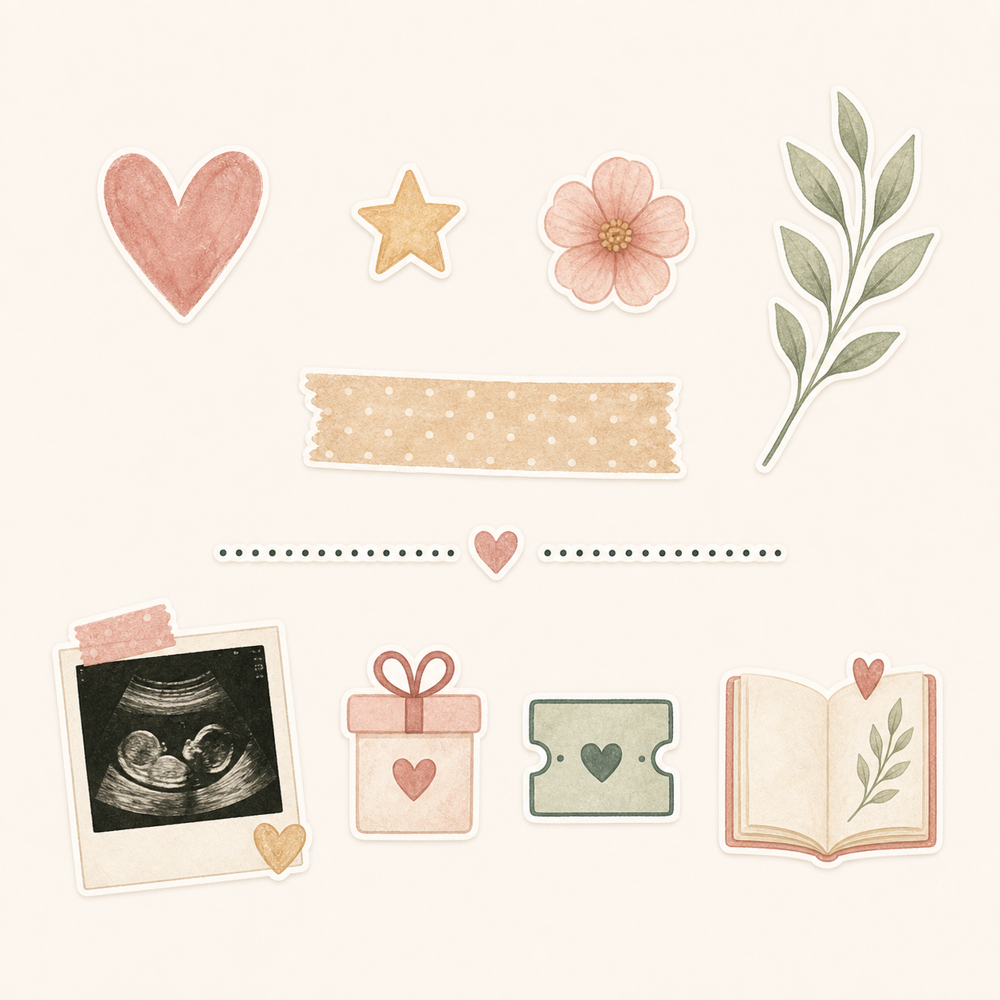

1Preguntes que obren memòria
Idees concretes per escriure sobre canvis, emocions, ecos, preparatius i primeres vegades.


App emocional + llibre personalitzat
Un espai per escriure el que sents, guardar fotos importants i preparar un llibre imprès A4.
Compra de prova: no es farà cap càrrec real.
Regalar el llibreQuè és Mi Embarazo
És la història de la dona que el va portar al món: el que va sentir, el que va canviar i el que va voler guardar.

1Idees concretes per escriure sobre canvis, emocions, ecos, preparatius i primeres vegades.

2Imatges organitzades perquè el llibre final no sigui una carpeta, sinó una història.
Converteix la teva història en un record per guardar.
Qui som
Hem creat aquest projecte per cuidar una part de l'embaràs que sovint queda fora: com el viu la dona, què canvia per dins i què val la pena recordar amb calma.
Al darrere hi ha producte, sensibilitat i moltes decisions petites pensades perquè escriure no sigui una obligació, sinó una manera de guardar el que importa.
Com funciona
Mi Embarazo t'acompanya en el dia a dia sense convertir-lo en una llista de tasques. Escrius, deses fotos i completes records quan pots.

«Perquè hi ha viatges que només es viuen una vegada i mereixen ser recordats per sempre.»
Escriu durant l'embaràs
Entrades lliures, records guiats i ajuda per escriure quan et falten les paraules. Sense exigències ni frases buides.
Una resposta breu, una foto o una nota són suficients per avançar.
També pots completar records més endavant, al teu ritme i sense pressió.
L'app està pensada per acompanyar-te, no per jutjar com hauries de viure l'embaràs.
Converteix els records en un llibre
Les fotos, les emocions, les fites i els textos s'ordenen per crear un llibre imprès en format A4.

Ecografies, panxa, detalls de casa i moments que després voldràs tornar a trobar.
La història no es queda en les dades: guarda com ho vas viure tu.
Un record pensat per acompanyar-te i explicar-lo d'aquí a molts anys.
Regala Mi Embarazo
Compra un val en línia i rep un codi per bescanviar a l'app. El llibre es demana quan la història està preparada.
Compra de prova: no es farà cap càrrec real.
«No és un altre objecte per preparar l'arribada. És una manera de guardar el que sovint es perd.»
Preguntes freqüents
Respostes clares per saber si Mi Embarazo encaixa amb tu, amb el teu moment i amb la manera com vols guardar aquesta etapa.
Sí. L'experiència permet completar els records sense pressió i preparar el llibre després del part.
No. És una app emocional i de records. No substitueix el seguiment mèdic ni l'assessorament professional.
Sí. Pots comprar un val per al llibre en línia. Després del pagament rebràs un codi per bescanviar a l'app i demanar el llibre quan estigui preparat.
Beta privada
Escriu-nos per correu electrònic per sol·licitar accés i conèixer els propers passos.
Demanar accés per correu